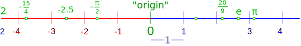

Real Numbers
Real Numbers are just numbers like:
| 1 | 12.38 | −0.8625 | 34 | π (pi) | 198 |
In fact:
Nearly any number you can think of is a Real Number
Real Numbers include:
| Whole Numbers (like 0, 1, 2, 3, 4, etc) | ||
| Rational Numbers (like 3/4, 0.125, 0.333..., 1.1, etc ) | ||
| Irrational Numbers (like π, √2, etc ) |
Real Numbers can also be positive, negative or zero.
So ... what is NOT a Real Number?
| Imaginary Numbers like √−1 (the square root of minus 1) are not Real Numbers |
||
| Infinity is not a Real Number |
Mathematicians also play with some special numbers that aren't Real Numbers.
The Real Number Line
The Real Number Line is like a geometric line.
A point is chosen on the line to be the "origin". Points to the right are positive, and points to the left are negative.

A distance is chosen to be "1", then whole numbers are marked off: {1,2,3,...}, and also in the negative direction: {...,−3,−2,−1}
Any point on the line is a Real Number:
- The numbers could be whole (like 7)
- or rational (like 20/9)
- or irrational (like π)
But we won't find Infinity, or an Imaginary Number.
Any Number of Digits
A Real Number can have any number of digits either side of the decimal point
- 120.
- 0.12345
- 12.5509
- 0.000 000 0001
There can be an infinite number of digits, such as 13 = 0.333...
Why are they called "Real" Numbers?
Because they are not Imaginary Numbers
The Real Numbers had no name before Imaginary Numbers were thought of. They got called "Real" because they were not Imaginary. That is the actual answer!
Real does not mean they are in the real world
They are not called "Real" because they show the value of something real.
In mathematics we like our numbers pure, when we write 0.5 we mean exactly half.
But in the real world half may not be exact (try cutting an apple exactly in half).